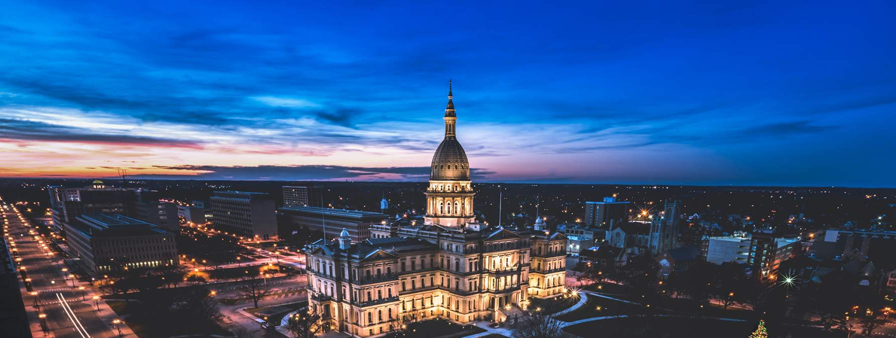

About Lansing
Lansing is the capital city of Michigan and is located in the central part of the state. It's home to Michigan State University, one of the biggest universities in the country. The city has a lot of government buildings since it's the state capital, including the Michigan State Capitol building. Lansing has a diverse economy with education, healthcare, and manufacturing playing important roles. The city is also known for its cultural attractions like the Potter Park Zoo and the Michigan History Center. Overall, Lansing is an important city for both government and education in Michigan.
- Population: 112,986
- Year Incorporated: 1859
- Region: Central
- Classification: Urban
- Average Income: $50,747
Sources: US Census - Lansing